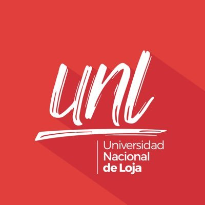

<p-toast position="top-center" key="tc"></p-toast>
<div class="menu nav" [class]="ocultar">
    
    <h4>{{params.nombres}} {{params.apellidos}}</h4>
    <p>Secretaria de la Carrera</p>
    <div class="items">
        <p><a routerLink='../verificar-informacion' routerLinkActivate="active"><i class="pi pi-user"> Verificar
                    Información</i></a></p>

        <p><a class="reporte" (click)="mensaje()"><i class="pi pi-sign-out"> Cerrar Sesión</i></a></p>
    </div>
</div>
<div id="mostar-nav" class="nav-icon">
    <i class="pi pi-bars" (click)="mostrarMenu()"></i>
</div>